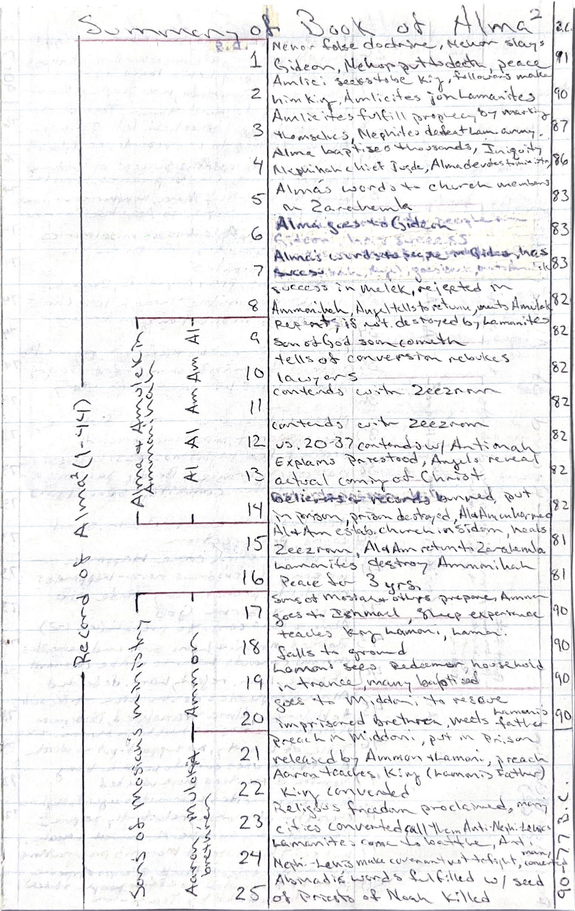
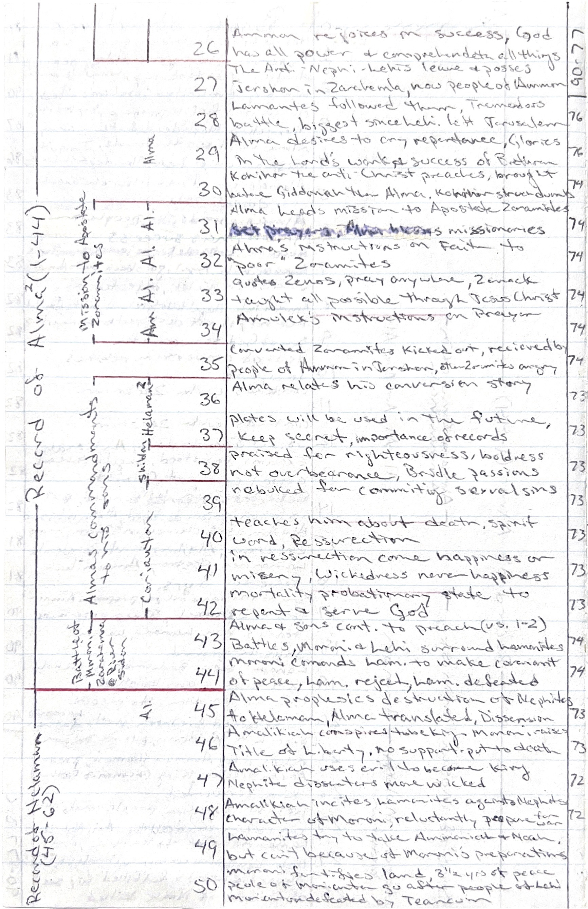
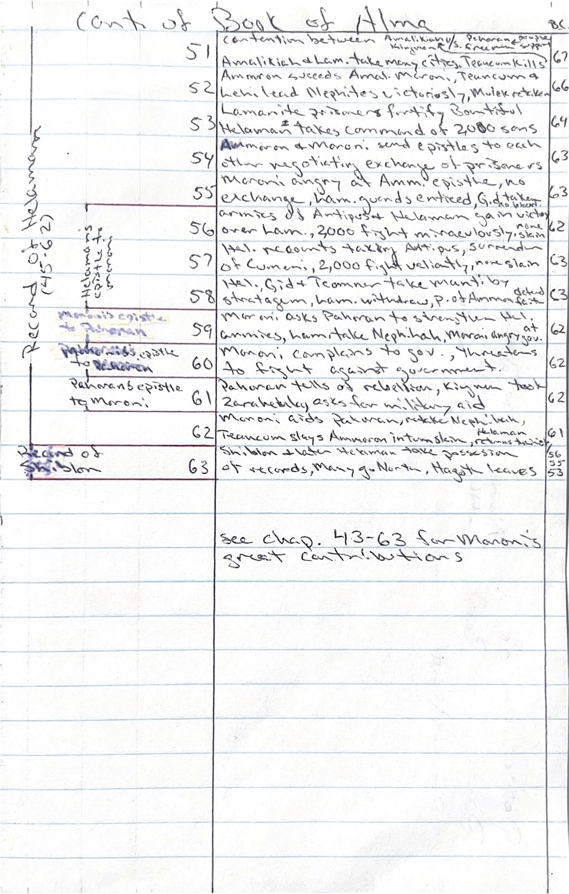

Visualizations
About This Project
During my mission to the Australia Perth Mission (1997–99), I developed a method of annotating scripture by drawing bracket lines in the margins of my scriptures to group chapters by theme — marking where a narrative arc began and ended, where the same locations appeared, which chapters shared an author, and so on. The physical brackets made it easy to see structure at a glance without losing your place in the text.



Original bracket annotations from the Book of Alma, made during the Australia Perth Mission (1997–99)
I always wanted to digitize that idea. Book Brackets is that attempt: an interactive visualization that draws bracket overlays on chapter lists, letting you switch between different ways of grouping the same text.
How it works
- Each visualization shows a numbered chapter list with descriptive summaries
- Topic buttons draw bracket overlays grouping chapters by theme, location, author, or chronology
- Overview visualizations let you drill into individual books
- Chapter numbers link directly to the full scripture text on ChurchofJesusChrist.org